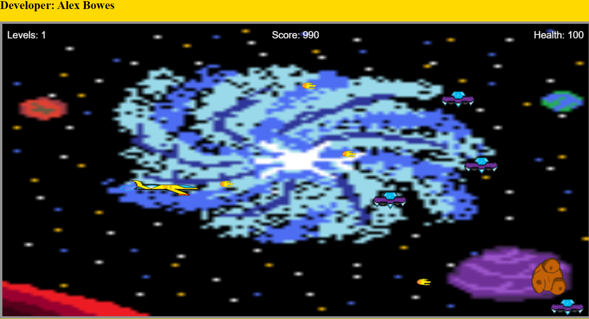

Space Adventures
Award WinnerAn immersive space exploration game developed during a College Project. Recognized for outstanding design and implementation, featuring dynamic visuals that enhance player engagement and game atmosphere.
Visual Studio Code
JavaScript
Audio Design